🟡 Branch points and period doubling of periodic orbits (aBS)
- 🟡 Branch points and period doubling of periodic orbits (aBS)
We consider the following three-dimensional vector field
\[\left\{\begin{aligned} r\dot{x} &= {-(\beta+\nu)x + \beta y - a_3 x^3 + b_3(y-x)^3},\\ \dot{y} &= \beta x - (\beta+\gamma)y - z - b_3(y-x)^3,\\ \dot{z} &= y, \end{aligned}\right.\]
with parameters $\nu,\beta,\gamma,r,a_3,b_3$. We use $\nu$ as the continuation parameter. This model presents a Hopf bifurcation from the trivial equilibrium as well as branch points (fold / pitchfork) of periodic orbits. It is a nice test case to show automatic branch switching (aBS) for periodic orbits, both from a branch point and from a period-doubling point.
It is easy to encode the vector field as follows
using Revise, CairoMakieimport BifurcationKit as BKfunction tor!(du, u, p, t = 0) (;nu, beta, gamma, r, a3, b3) = p x, y, z = u du[1] = ( -(beta + nu) * x + beta * y - a3 * x^3 + b3 * (y - x)^3 ) / r du[2] = beta * x - (beta + gamma) * y - z - b3 * (y - x)^3 du[3] = y return duendpar_tor = (nu = -0.9, beta = 0.5, gamma = -0.6, r = 0.6, a3 = 0.328578, b3 = 0.933578)prob = BK.ODEBifProblem(tor!, zeros(3), par_tor, (BK.@optic _.nu); record_from_solution = (x, p; k...) -> (x = x[1], y = x[2], z = x[3]))Branch of equilibria
We first compute the branch of equilibria w.r.t. $\nu$.
opts_br = BK.ContinuationPar(p_min = -1.0, p_max = 0.0, n_inversion = 8, ds = 0.001)br = BK.continuation(prob, BK.PALC(), opts_br; normC = BK.norminf,)f, ax = BK.plot(br, dash_unstable_style = true)f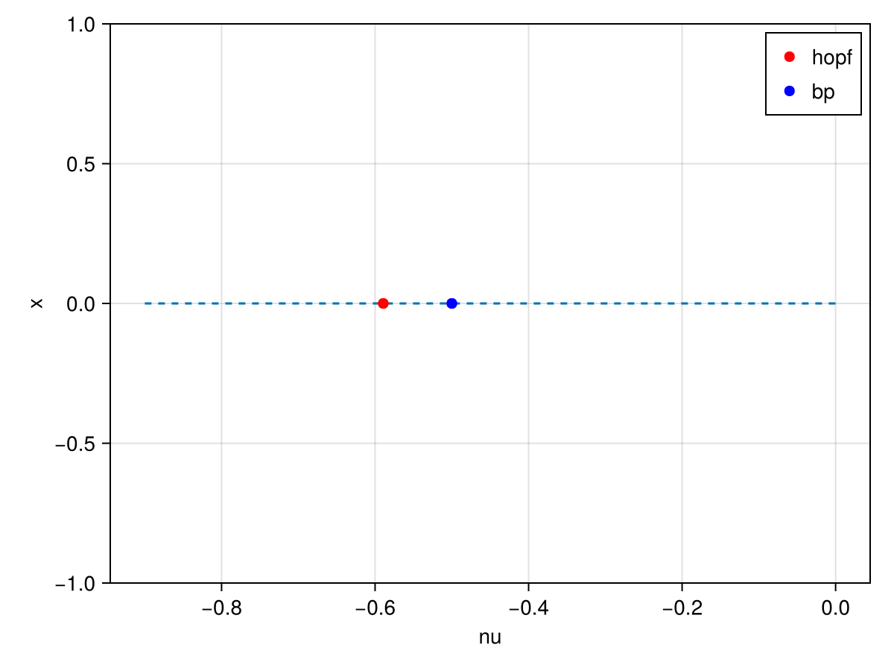
We detect a Hopf bifurcation (index 1) from which we shall compute a branch of periodic orbits, and a branch point of equilibria. We next define the recording and plotting functions used below.
function recordPO(x, p; iter, state, k...) probpo = BK.getprob(iter) par = BK.getparams(iter, state) xtt = BK.get_periodic_orbit(probpo, x, par) return (max = maximum(xtt[1, :]), min = minimum(xtt[1, :]), period = BK.getperiod(probpo, x, par))endfunction plotPO(ax, x, p; iter, state, k...) probpo = BK.getprob(iter) par = BK.getparams(iter, state) xtt = BK.get_periodic_orbit(probpo, x, par) lines!(ax, xtt.t, xtt[1, :]; label = "x", k...) lines!(ax, xtt.t, xtt[2, :]; label = "y", k...) lines!(ax, xtt.t, xtt[3, :]; label = "z", k...)endargspo = (record_from_solution = recordPO, plot_solution = plotPO)Periodic orbits with orthogonal collocation
We compute the branch of periodic orbits from the Hopf bifurcation point using orthogonal collocation.
We now compute the branch of periodic orbits:
opts_po_cont = BK.ContinuationPar(opts_br, ds = 0.001, dsmax = 0.015, tol_stability = 1e-9, p_min = -0.7)prob_po = BK.Collocation(30, 4; meshadapt = false, jacobian = BK.DenseAnalytical())br_po = BK.continuation(br, 1, opts_po_cont, prob_po; alg = BK.PALC(tangent = BK.Bordered()), argspo..., normC = BK.norminf, linear_algo = BK.COPBLS())f, ax = BK.plot(br_po, dash_unstable_style = true)f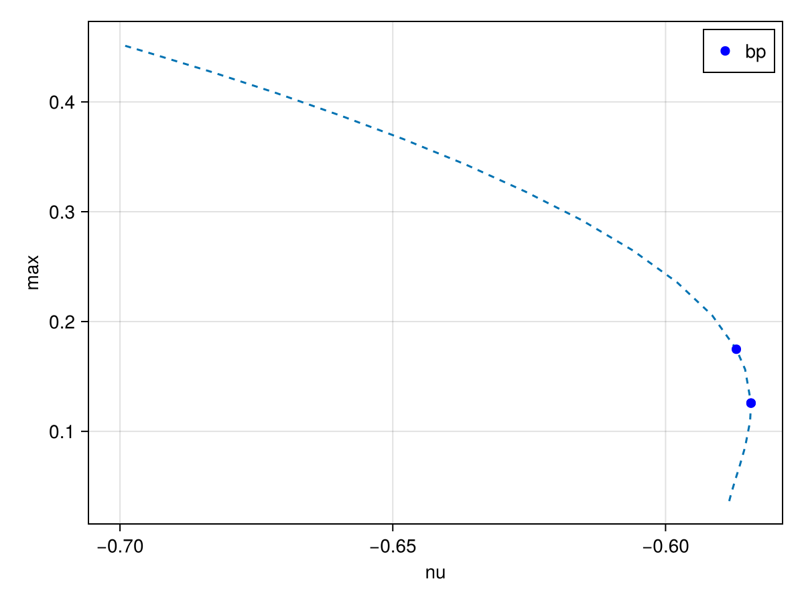
The branch of periodic orbits presents several branch points. The first one is a fold of periodic orbits, the second one is a pitchfork.
Normal form of the branch points
You can skip this in a first read. This is not needed in what follows.
We compute the normal form of the two first branch points using the Iooss method (prm = Val(false)).
bp_fold = BK.get_normal_form(br_po, 1; prm = Val(false))Fold (Iooss) bifurcation point of periodic orbit
┌─ nu ≈ -0.5843402467081603
├─ Period = 8.437511538124996
├─ Problem: Collocation
├─ Normal form [Iooss:
├ ∂τ = 1 + α⋅ξ + (a₁₁⋅ξ + a₀₁)⋅δp + a₂₀⋅ξ² + ...
├ ∂ξ = c₀₁⋅δp + c₁₁⋅δp⋅ξ + c₂⋅ξ² + c₃⋅ξ³ + ...
├─ Coefficients a:
│ ├─ a₀₁ = -0.1442490741991702
│ ├─ a₁₁ = 2.238208558717226
│ └─ a₂₀ = -4.549577606478209
└─ Coefficients c:
├─ c₀₁ = 0.10134857141546687
├─ c₁₁ = 0.9445353796014021
├─ c₂ = 0.06857870694720825
└─ c₃ = 3.5507955962665285
The second branch point is a pitchfork:
bp_pf = BK.get_normal_form(br_po, 2; prm = Val(false))Pitchfork bifurcation point of periodic orbit
┌─ nu ≈ -0.587029077353481
├─ Period = 8.689675047432978
├─ Problem: Collocation
├─ type: SubCritical
├─ Normal form [Iooss:
├ ∂τ = 1 + α⋅ξ + (a₁₁⋅ξ + a₀₁)⋅δp + a₂₀⋅ξ² + ...
├ ∂ξ = c₀₁⋅δp + c₁₁⋅δp⋅ξ + c₂⋅ξ² + c₃⋅ξ³ + ...
├─ Coefficients a:
│ ├─ a₀₁ = 6.063123212908898
│ ├─ a₁₁ = 0.20422711845272043
│ └─ a₂₀ = 5.156549269974085
└─ Coefficients c:
├─ c₀₁ = 2.3053558367051734e-9
├─ c₁₁ = 23.960801776830955
├─ c₂ = -0.0001671307647378689
└─ c₃ = 40.53638208890932
Automatic branch switching from a branch point
Since the second branch point is a pitchfork, automatic branch switching is available. We simply continue from the second branch point:
br_po2 = BK.continuation(deepcopy(br_po), 2; δp = 0.001, record_from_solution = recordPO, normC = BK.norminf)f, ax = BK.plot(br_po, br_po2, branchlabel = ["BP branch", "aBS from BP"], dash_unstable_style = true)f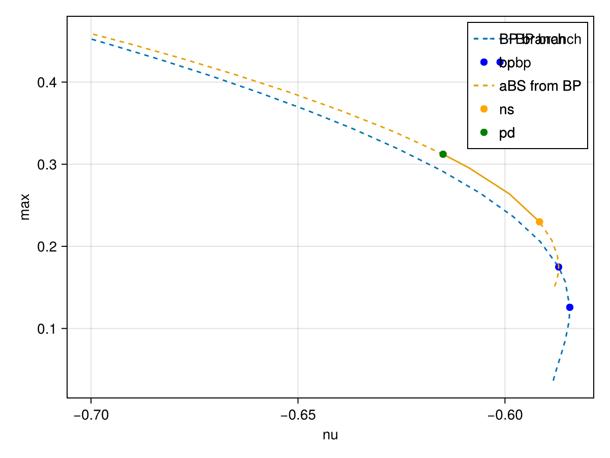
The bifurcated branch contains a Neimark-Sacker point and a period-doubling point.
Automatic branch switching from a period-doubling point
We now branch from the period-doubling point detected on the previous branch.
You can skip this in a first read. This is not needed in what follows.
We can compute its normal form just for fun...
ipd = findfirst(sp -> sp.type == :pd, br_po2.specialpoint)bp_pd = BK.get_normal_form(br_po2, ipd)Period-Doubling bifurcation point of periodic orbit
├─ Period = 9.266303418708864 -> 18.532606837417728
├─ Problem: Collocation
├─ nu ≈ -0.6149552262549057
├─ type: ├─ Normal form (Iooss):
├ ∂τ = 1 + a₀₁⋅δp + a₂⋅ξ²
├ ∂ξ = ξ⋅(c₁₁⋅δp + c₃⋅ξ²)
├─── a₀₁ = 2.0689075898644167
├─── a₂ = 0.3043452521119881
├─── c₁₁ = -6.6766006323628835
└─── c₃ = -6.735718118428317
Let's branch:
br_po_pd = BK.continuation(deepcopy(br_po2), ipd; δp = 0.0005, record_from_solution = recordPO, normC = BK.norminf)f, ax = BK.plot(br_po2, br_po_pd, branchlabel = ["BP branch", "aBS from PD"], dash_unstable_style = true)f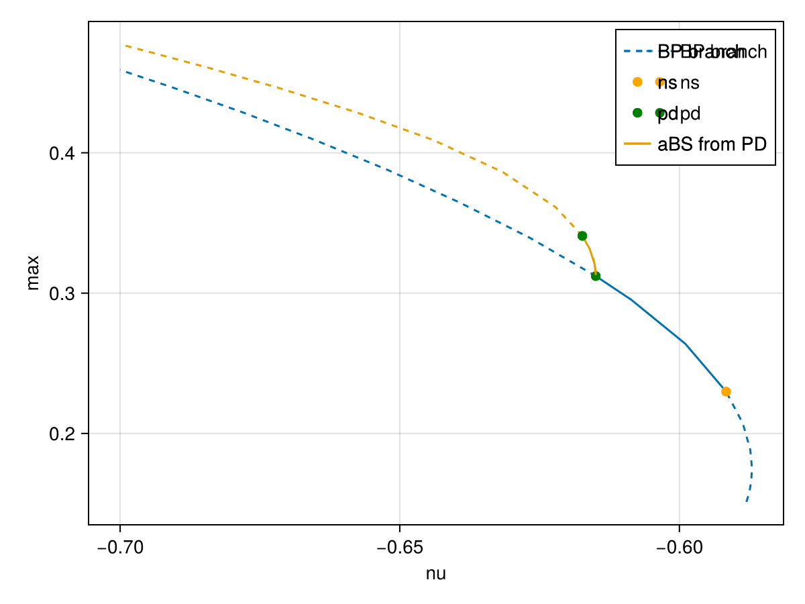
Periodic orbits with standard shooting
We now compute the branch of periodic orbits with standard shooting. For shooting, the normal form of branch points and period-doubling points is computed from the Poincaré return map.
import OrdinaryDiffEq as ODEprob_ode = ODE.ODEProblem(tor!, zeros(3), (0, 1), par_tor; abstol = 1e-12, reltol = 1e-10)prob_sh = BK.Shooting(3, prob_ode, ODE.Vern9(); parallel = true)opts_po_sh = BK.ContinuationPar(opts_br, ds = -0.001, dsmax = 0.01, tol_stability = 1e-4, p_min = -0.7)br_po_sh = BK.continuation(br, 1, opts_po_sh, prob_sh; record_from_solution = recordPO, normC = BK.norminf, δp = 0.001)f, ax = BK.plot(br_po_sh, dash_unstable_style = true)f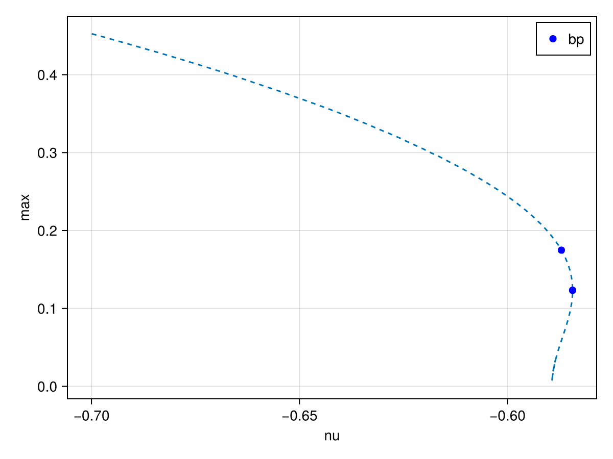
You can skip this in a first read. This is not needed in what follows.
For information, the normal form of the second branch point (a pitchfork) is computed with the Poincaré return map method (prm = Val(true), the default for shooting):
bp_pf_sh = BK.get_normal_form(br_po_sh, 2)BranchPoint bifurcation point of periodic orbit
┌─ nu ≈ -0.5870284941300621
├─ Period = 8.689644317770533
├─ Problem: Shooting
└─ Normal form =
SubCritical - Pitchfork (Maps) bifurcation point at nu ≈ -0.5870284941300621
Normal form x ─▶ x + a01⋅δnu + a02⋅δnu² + x⋅(b11⋅δnu + b30⋅x²/6)
┌─ a01 = -2.7552857917211623e-5
├─ a02 = missing
├─ b11 = 208.24670672941363
├─ b20 = 0.002097103257060902
└─ b30 = 20581.906476298675
Automatic branch switching from a branch point
We branch from this branch point:
br_po_sh_bp = BK.continuation(deepcopy(br_po_sh), 2; δp = 0.0005, record_from_solution = recordPO, normC = BK.norminf)f, ax = BK.plot(br_po_sh, br_po_sh_bp, branchlabel = ["BP branch", "aBS from BP"], dash_unstable_style = true)f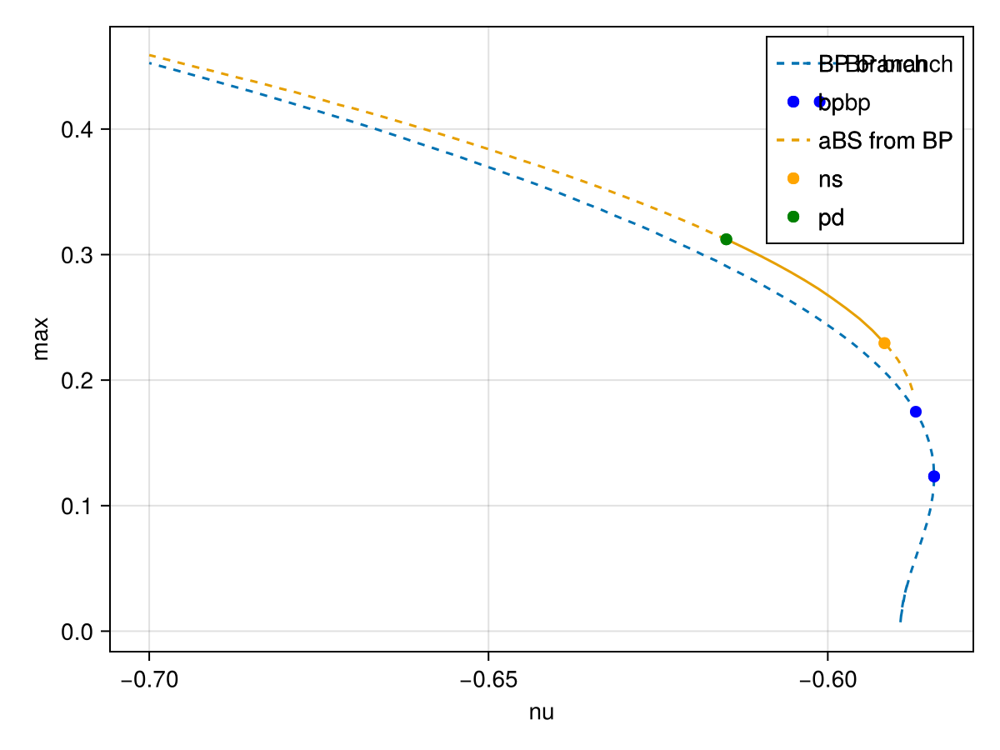
Automatic branch switching from a period-doubling point
The bifurcated branch has a Neimark-Sacker point and a period-doubling point. We branch from the period-doubling point:
ipd_sh = findfirst(sp -> sp.type == :pd, br_po_sh_bp.specialpoint)br_po_sh_pd = BK.continuation(deepcopy(br_po_sh_bp), ipd_sh; δp = 0.0005, ampfactor = 0.5, record_from_solution = recordPO, callback_newton = BK.cbMaxNorm(1.0), normC = BK.norminf)f, ax = BK.plot(br_po_sh_bp, br_po_sh_pd, branchlabel = ["BP branch", "aBS from PD"], dash_unstable_style = true)f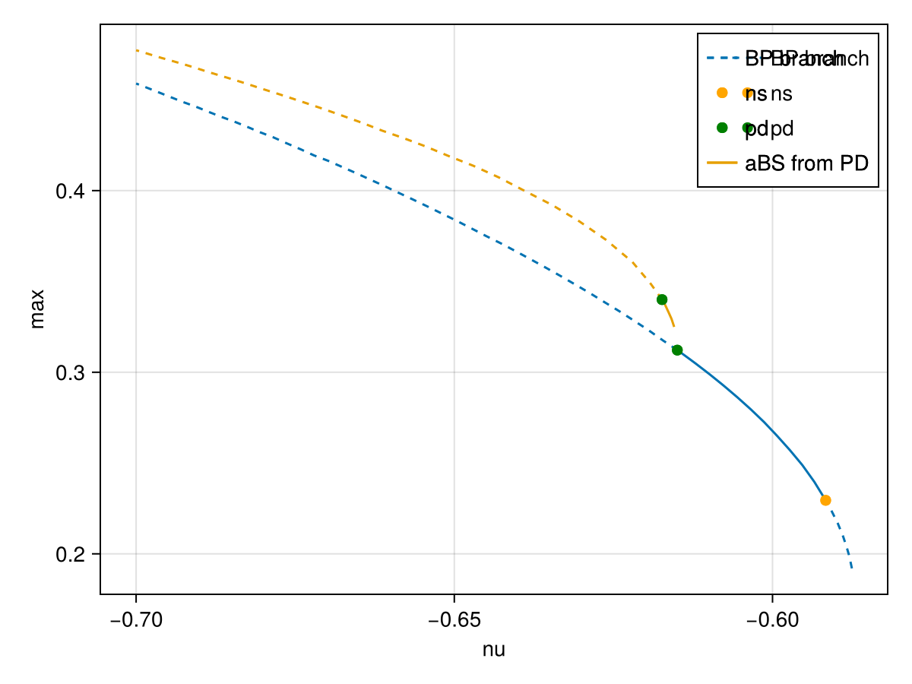
Periodic orbits with the trapezoid method
Finally, we use the trapezoid method. For this discretisation, the normal form of the branch point is not fully implemented: only the eigenvectors are computed and branch switching requires a manual choice of δp and ampfactor.
prob_trap = BK.Trapeze(M = 100; jacobian = BK.Dense())opts_po_trap = BK.ContinuationPar(opts_br, ds = -0.001, dsmax = 0.01, tol_stability = 1e-4, p_min = -0.7)br_po_trap = BK.continuation(br, 1, opts_po_trap, prob_trap; record_from_solution = recordPO, normC = BK.norminf, δp = 0.001)f, ax = BK.plot(br_po_trap, dash_unstable_style = true)f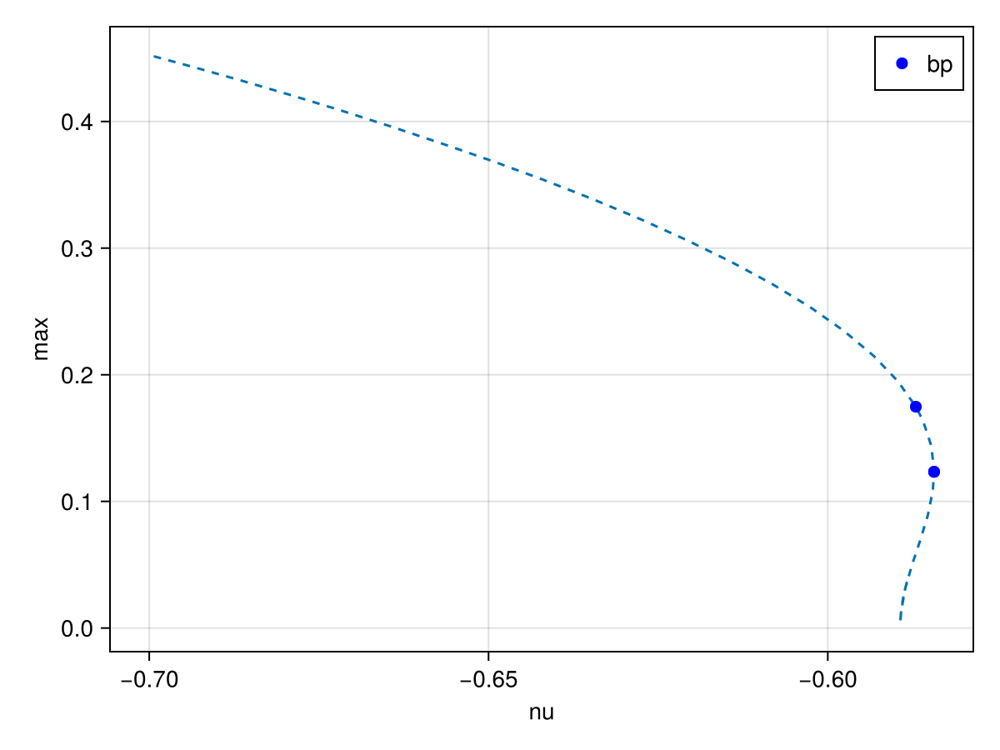
The normal form of the second branch point only returns the eigenvectors:
bp_trap = BK.get_normal_form(br_po_trap, 2; detailed = Val(true))BranchPoint bifurcation point of periodic orbit
┌─ nu ≈ -0.5870242764652156
├─ Period = 8.780303648840643
├─ Problem: Trapeze
└─ Normal form =
BranchPoint bifurcation point at nu ≈ -0.5870242764652156
Normal form (a01⋅δnu + a02⋅δnu²/2 + b10⋅x⋅δnu + b20⋅x²/2 + b30⋅x³/6)
Since automatic branch switching is not available for Trapeze, we provide the amplitude and parameter increment manually:
br_po_trap_bp = BK.continuation(deepcopy(br_po_trap), 2; δp = -0.001, ampfactor = 0.01, normal_form_kwargs = (detailed = Val(false), ), record_from_solution = recordPO, normC = BK.norminf)f, ax = BK.plot(br_po_trap, br_po_trap_bp; branchlabel = ["BP branch", "manual BP switching"], dash_unstable_style = true)f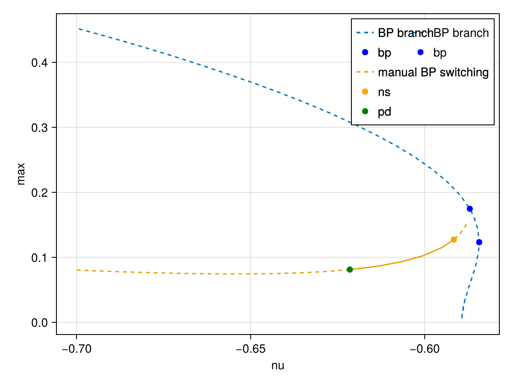
The bifurcated branch has a Neimark-Sacker point and a period-doubling point. The normal form of the period-doubling point is available but its coefficients are not yet implemented for Trapeze:
BK.get_normal_form(br_po_trap_bp, 2; detailed = Val(true))Period-Doubling bifurcation point of periodic orbit
├─ Period = 9.488897213150727 -> 18.977794426301454
├─ Problem: Trapeze
none - Period-Doubling ┌─ Normal form:
├ x ─▶ x⋅(a⋅δnu - 1 + c⋅x²)
├─ a = missing
└─ c = missing
br_po_trap_pd = BK.continuation(deepcopy(br_po_trap_bp), 2; δp = -0.001, ampfactor = 0.01, normal_form_kwargs = (detailed = Val(false), ), record_from_solution = recordPO, normC = BK.norminf)f, ax = BK.plot(br_po_trap_pd, br_po_trap_bp; dash_unstable_style = true)f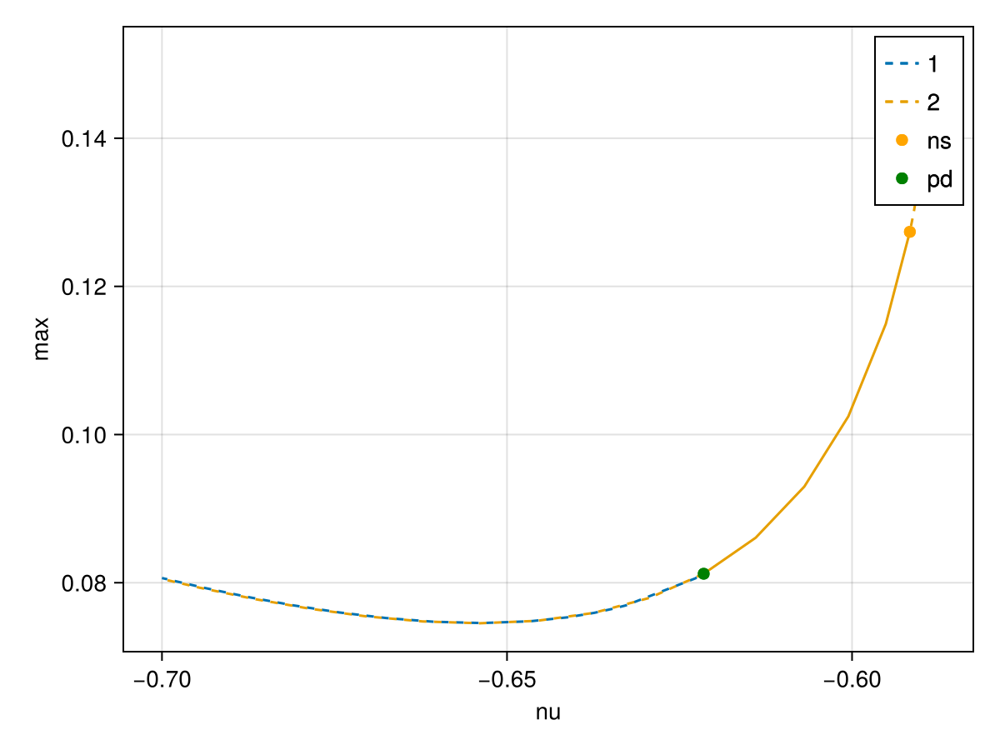
Automatic bifurcation diagram of periodic orbits
Finally, we compute the automatic bifurcation diagram of periodic orbits starting from br_po. The function bifurcationdiagram recursively branches at branch points and period-doubling points. We use a filter to avoid branches with a too large period.
function filter_bp(_, _, pt) return BK.saved_solution(pt.x)[end] < 20 # limit periodendbd_po = @time BK.bifurcationdiagram(deepcopy(br_po.prob), deepcopy(br_po), 4, BK.ContinuationPar(BK.getcontparams(br_po2); dsmax = 0.005, p_min = -0.7, max_steps = 100); normC = BK.norminf, bothside = Val(true), verbosediagram = true, δp = 0.000125, normal_form_kwargs = (prm = Val(false),), filter_bif_points = filter_bp, callback_newton = BK.cbMaxNorm(10), linear_algo = BK.COPBLS(), )━━━━━━━━━━━━━━━━━━━━━━━━━━━━━━━━━━━━━━━━━━━━━━━━━━
───▶ Automatic computation of bifurcation diagram
────────────────────────────────────────────────────────────────────────────────
──▶ New branch, level = 2, dim(Kernel) = 1, code = 0, from bp #1 at p = -0.5843402467081603, type = bp
- # 1, bp at p ≈ -0.58434025 ∈ (-0.58434025, -0.58434025), |δp|=8e-12, [ guess], δ = (-1, 0), step = 9
────────────────────────────────────────────────────────────────────────────────
──▶ New branch, level = 2, dim(Kernel) = 1, code = 0, from bp #2 at p = -0.587029077353481, type = bp
────▶ From Pitchfork
- # 2, bp at p ≈ -0.58702908 ∈ (-0.58702908, -0.58702887), |δp|=2e-07, [converged], δ = (-1, 0), step = 11
────────────────────────────────────────────────────────────────────────────────
──▶ New branch, level = 3, dim(Kernel) = 1, code = ('0', 1), from bp #2 at p = -0.6149554529224748, type = pd
────▶ From PeriodDoubling
- # 2, pd at p ≈ -0.61495545 ∈ (-0.61495545, -0.61495522), |δp|=2e-07, [converged], δ = (-1, -1), step = 21
────────────────────────────────────────────────────────────────────────────────
──▶ New branch, level = 3, dim(Kernel) = 1, code = ('0', 1), from bp #5 at p = -0.6149553167027318, type = pd
────▶ From PeriodDoubling
- # 5, pd at p ≈ -0.61495532 ∈ (-0.61495532, -0.61495520), |δp|=1e-07, [converged], δ = ( 1, 1), step = 54
────────────────────────────────────────────────────────────────────────────────
──▶ New branch, level = 4, dim(Kernel) = 1, code = ('0', 1, 1), from bp #2 at p = -0.6173543197318094, type = pd
────▶ From PeriodDoubling
- # 2, pd at p ≈ -0.61735432 ∈ (-0.61735432, -0.61735432), |δp|=1e-09, [converged], δ = (-1, -1), step = 22
────────────────────────────────────────────────────────────────────────────────
──▶ New branch, level = 4, dim(Kernel) = 1, code = ('0', 1, 1), from bp #3 at p = -0.6173543294382283, type = pd
────▶ From PeriodDoubling
- # 3, pd at p ≈ -0.61735433 ∈ (-0.61735433, -0.61735432), |δp|=1e-08, [converged], δ = ( 1, 1), step = 36
────────────────────────────────────────────────────────────────────────────────
──▶ New branch, level = 4, dim(Kernel) = 1, code = ('0', 1, 2), from bp #2 at p = -0.6173543227689463, type = pd
────▶ From PeriodDoubling
- # 2, pd at p ≈ -0.61735432 ∈ (-0.61735432, -0.61735431), |δp|=1e-08, [converged], δ = (-1, -1), step = 22
────────────────────────────────────────────────────────────────────────────────
──▶ New branch, level = 4, dim(Kernel) = 1, code = ('0', 1, 2), from bp #3 at p = -0.617354327021876, type = pd
────▶ From PeriodDoubling
- # 3, pd at p ≈ -0.61735433 ∈ (-0.61735433, -0.61735432), |δp|=1e-08, [converged], δ = ( 1, 1), step = 36
22.829855 seconds (23.90 M allocations: 30.398 GiB, 3.55% gc time, 76.18% compilation time)f, ax = BK.plot(bd_po, dash_unstable_style = true)f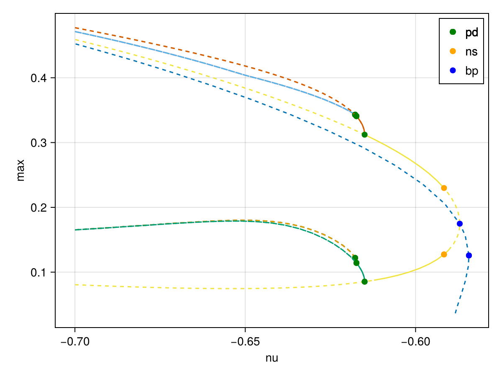